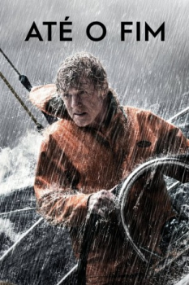

Até o Fim (2013)


Never give up.

Avaliação (TMDb):


6.6/10 (1.2K votos)
Avaliação (Usuário):
Outro Título:All Is Lost (Título Original)
País:United States, 106 minutos
Idiomas falados:Inglês, Português
Gênero(s):Ação, Aventura, Drama
Diretor(s):J.C. Chandor
Codec:MPEG-2 (DVD)
Número: 690
Sinopse:
Um navegador experiente (Robert Redford) está viajando pelo Oceano Pacífico, quando uma colisão com um contâiner leva à destruição parcial do veleiro. Ele consegue remendar o casco, mas terá a difícil tarefa de resistir às tormentas e aos tubarões para sobreviver, além de contar apenas com mapas e com as correntes marítimas para chegar ao seu destino.
Elenco:
Robert Redford
Tipo de mídia: DVD5,
Legendas: Inglês, Português
Alugado: Não
Tela: 2.35:1